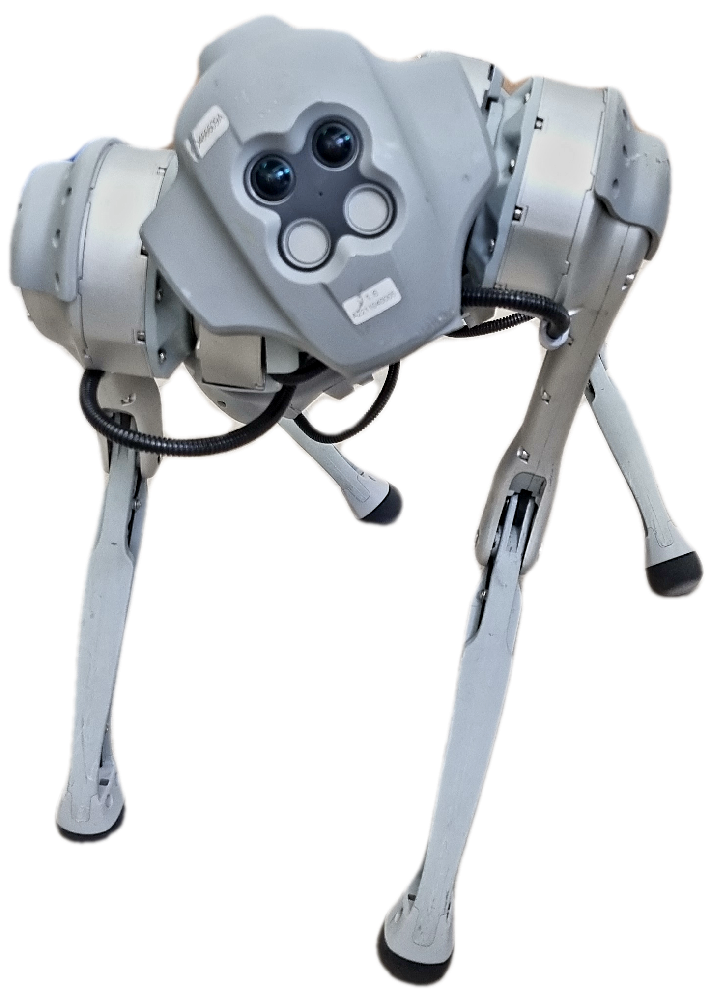
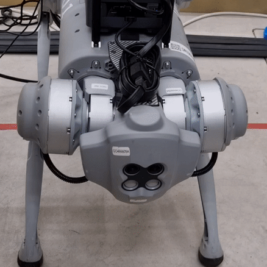
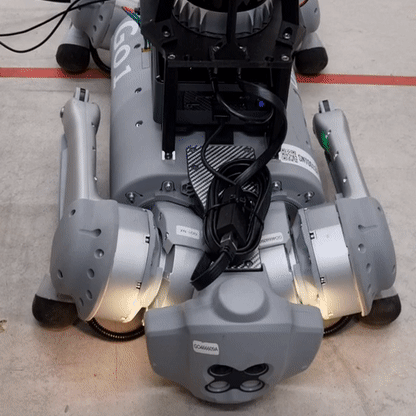

🐕 Unitree Go1 ROS2 Driver
A ROS2 package which can be used to control the legged robot Unitree Go1 Edu using ROS topics.
This package acts has middleware between ROS2 and unitree_legged_sdk, which enables
anyone to control the robot with velocity commands as well as receive back the robot state. Furthermore, additional features are also available such as standing up/down the robot and use head LEDs for some status information.
Note
Only supports unitree_legged_sdk High level commands

📜 Table of Contents
- ⚙️ Installation
- 📦 Installation From Source
- 🚀 Usage
- 🤖 ROS Related
- 📥 Subscribed Topics
- 📤 Published Topics
- ⚙️ ROS Parameters
- 🛠️ Features
- 💡 Robot LED statuses
- 🪫 Low Battery Protection
- 🚧 Obstacle Avoidance
- 🔗 Related Packages
- 🔑 License
- 👏 Contributions
- 🎖️ Credits
- Maintainers
- Third-party Assets
⚙️ Installation
This package is available in the ROS index for both Iron and Humble distributions.
[!IMPORTANT] If you are using foxy as your ROS distribution, you need to build from source
📦 Installation From Source
[!NOTE] Make sure to clone it recursively, as depends on the
unitree_legged_sdk.
mkdir -p ~/unitree_ws/src
cd ~/unitree_ws/src
git clone --recurse-submodules https://github.com/snt-arg/unitree_ros.git
Once you have cloned this repository, you will need to build it using Colcon.
cd ~/unitree_ws
source /opt/ros/[ros-distro]/setup.bash # or zsh if using the zsh shell!
colcon build --symlink-install
source install/setup.bash # or zsh if using the zsh shell!
After having built the workspace, you should now be able to use the driver to control your robot.
🚀 Usage
You can use this driver wired or with a Wi-Fi connection. By default, it is set to use the wired connection.
To launch the driver, you can use the launch file available. For a wired connection use the following command:
For a Wi-Fi connection use the following command:
In case you prefer to modify more parameters, you can do so by passing the parameters file. The default parameters can be found in config/params.yaml or here.
ros2 launch unitree_ros unitree_driver_launch.py params_file:="path_to_your_params_file" #wifi:=true/false
🤖 ROS Related
📥 Subscribed Topics
| Topic name | Message Type | Description |
|---|---|---|
cmd_vel |
geometry_mgs/msg/Twist.msg | This is used by the driver to receive velocity commands and send the appropriate commands to the robot. |
/stand_up |
std_msgs/msg/Empty.msg | Triggers the robot to stand up |
/stand_down |
std_msgs/msg/Empty.msg | Triggers the robot to stand down |
📤 Published Topics
| Topic name | Message Type | Description |
|---|---|---|
/odom |
nav_msgs/msg/Odometry.msg | The odometry state received from the robot is being published to this topic. |
/imu |
sensor_msgs/msg/IMU.msg | The IMU state received from the robot is being published to this topic. |
/bms_state |
unitree_ros/msg/bms.msg | The battery state received from the robot is being published to this topic. |
/sensor_ranges |
unitree_ros/msg/SensorRanges.msg | The battery state received from the robot is being published to this topic. |
🔧 ROS Parameters
| Parameter Name | Default value | Description |
|---|---|---|
ns |
- | Name space that should be given to robot driver |
robot_ip |
192.168.123.161 | Robot IP that should be used to establish the UDP connection. For a Wi-Fi conntection use 192.168.12.1 |
robot_target_port |
8082 | The port that should be used to communicate with the robot. |
cmd_vel_topic_name |
/cmd_vel | Topic name that should be used for subscribing to velocity commands |
odom_topic_name |
/odom | Topic name that should be used for publishing the odometry state |
imu_topic_name |
/imu | Topic name that should be used for publishing the IMU state |
bms_state_topic_name |
/bms_state | Topic name that should be used for publishing the battery management state, such as battery level. |
imu_frame_id |
imu | Frame id that should be used for the IMU frame |
odom_frame_id |
odom | Frame id that should be used for the odometry frame |
odom_child_frame_id |
base_link | Frame id of the body of the robot |
use_obstacle_avoidance |
false | Enables (true) or disables (false) the robot obstacle avoidance. |
low_batt_shutdown_threshold |
20 | Battery threshold for when to stop the robot from moving, in case the battery is below |
🛠️ Features
[!NOTE] In the next version, joint states will also be available.
💡 Robot LED statuses
The robot has a few predetermined LED statuses, which are useful to give some information to anyone using the robot. The following statuses are available:
-
🟢 Green Light: Ready status

-
⚪️ White Light: Idle status

-
🔵 Blue Light: Moving status

-
🟡 Yellow Light: Low battery (< 30 %)

🪫 Low Battery Protection
By specifying a low battery threshold using the parameters file (low_batt_shutdown_threshold), the driver will stop the robot
from moving and will stand it down. By default, the low battery threshold value is set to 20%.
🚧 Obstacle Avoidance
The robot has an obstacle avoidance mode. However, this mode is not enabled by default. Therefore,
this driver allows you to enable it using the parameters file (use_obstacle_avoidance). By default, this is
set to false
🔗 Related Packages
🔑 License
This project is licensed under the GPL-3.0 license - see the LICENSE for more details.
👏 Contributions
Contributions are welcome! If you have any suggestions, bug reports, or feature requests, please create a new issue or pull request.
🎖️ Credits
This package was developed for the Autonomous Robotics Group (ARG) from the University of Luxembourg.
Maintainers
Third-party Assets
-
unitree_legged_sdk: This is the SDK provided by the Unitree robotics. It is being used to send/receive all the High level commands to/from the robot.
-
faceLightSDK_nano: This is the SDK that can be found on the internal computers of the Unitree Go1. It has been ported to this ROS package with the goal of being able to control the face LEDs, which are used to give some robot statuses.